Výroba průmyslových dopravníků sypkých hmot, projekční a konstrukční kancelář a zakázková kovovýroba v Hranicích
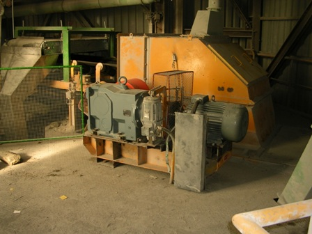
Veškeré autentické informace, historie, provozní údaje a identifikační data naší společnosti.
Společnost GTC plus s.r.o. se sídlem v průmyslovém areálu na ulici Tovární 605 v Hranicích (IČO 27812266, jednatel Ing. Miloš Novotný) se specializuje na strojírenskou výrobu dopravních zařízení pro sypké hmoty, projekční a konstrukční činnost ve strojírenství a zakázkovou kovovýrobu.
Vyrábíme a dodáváme šnekové dopravníky, korečkové elevátory, pásové dopravníky, redlery, vzduchové dopravní žlaby, turniketové podavače, hradítkové a klapkové uzávěry i teleskopické plnicí hubice pro cementárny, vápenky, lomy, betonárky, teplárny a chemický či potravinářský průmysl.
Naše vlastní konstrukční a projekční kancelář zpracovává kompletní výrobní a montážní dokumentaci v CAD systémech (licencovaný software ZWCAD a strojírenská nadstavba TDS-TECHNIK) včetně 3D modelování technologických uzlů a posouzení statiky.
| Obchodní firma | GTC plus s.r.o. |
| Sídlo a provozovna | Tovární 605, 753 01 Hranice |
| IČO / DIČ | 27812266 / CZ27812266 |
| Spisová značka | C 29972 vedená u Krajského soudu v Ostravě |
| Jednatel společnosti | Ing. Miloš Novotný |
| Telefony / E-mail | +420 737 288 730, +420 581 604 373 | gtc@gtc-hranice.cz |
Kompletní výroba dopravníků sypkých hmot, uzávěrů, klapek a svařovaných ocelových konstrukcí v Hranicích.
Návrhy technologických linek pro přední české a slovenské cementárny (Hranice, Čížkovice, Prachovice, Mokrá, Štramberk, Ladce, Radotín).
Výroba vjezdových bran, oplocení, zábradlí, ocelových schodišť a přístřešků včetně montáže.
Plná oprávnění pro zámečnictví, obrábění, projektovou činnost ve výstavbě a licencované 2D/3D CAD pracoviště.
Kompletní rozpis všech kategorií, materiálů, technologií a služeb podle našeho katalogu.
Určeny pro vodorovnou i šikmou dopravu práškových a zrnitých sypkých hmot (cement, vápno, popílek, písek, obilí).
Svislá i horizontální plynulá doprava sypkých materiálů s vysokou hodinovou výkonností a dlouhou životností v těžkém provozu.
Regulace a uzavírání toku sypkých materiálů pod sily, zásobníky, výsypkami filtrů a dopravními cestami.
Zpracování kompletní technické dokumentace pro investiční akce, rekonstrukce technologických linek a kusovou strojírenskou výrobu.
Zakázková výroba ocelových konstrukcí, obslužných plošin, lávek, výsypek i stavební zámečnické prvky pro firmy a rodinné domy.
Přehledně zpracované kompletní tabulky, ceníky, technické specifikace a referenční zakázky.
Přehled standardních konstrukčních řad z výrobního katalogu společnosti (zakázkově upravujeme dle dispozic provozu).
| Skupina zařízení | Konstrukční provedení | Rozměrová řada / Parametry | Typické průmyslové nasazení |
|---|---|---|---|
| Šnekové dopravníky (ŠD) | Trubkové (TŠD) a žlabové (ŽŠD) | Ø 125, 160, 200, 250, 315, 400, 500, 630, 800 mm | Doprava cementu, vápna, popílku, moučky, granulátů |
| Korečkové elevátory (KE) | Pásové (KEP) a řetězové (KEŘ) | Šířka bočnic / korečků 160 až 800 mm, výška až 45 m | Svislá doprava sypkých hmot do sil a zásobníků |
| Pásové dopravníky (PD) | Otevřené i zakrytované příhradové/profilové | Šířka pásu B = 400, 500, 650, 800, 1000, 1200 mm | Kamenolomy, štěrkovny, cementárny, uhelné skládky |
| Vzduchové dopravní žlaby (VDŽ) | Přímé, obloukové, odbočky a uzávěry | Šířka tkaniny 125 až 500 mm, provzdušňovací dno | Fluidní doprava jemně mletých prachů pod mírným spádem |
| Turniketové podavače (TP) | Kruhové a čtvercové příruby, utěsněný rotor | DN 150 až DN 500, přímý násuvný pohon | Dávkování pod sily a odlučovači prachu (filtry) |
| Hradítkové a jehlové uzávěry | Ruční kolo, řetězové kolo, pneu válec, el. pohon | Světlost 150×150 mm až 800×800 mm | Uzavírání výsypek sil a vstupů do dopravníků |
| Rozdělovací klapky (RK) | Dvoucestné symetrické a nesymetrické | Ruční páka, pneumatický píst nebo elektropohon | Přesměrování toku materiálu do dvou dopravních větví |
Výběr významných průmyslových podniků, pro které společnost GTC plus s.r.o. realizovala projekční práce a dodávky zařízení.
| Průmyslový závod / Klient | Lokalita | Rozsah realizovaných prací a dodávek |
|---|---|---|
| CEMENT HRANICE, a.s. (Buzzi Unicem) | Hranice | Projekce a dodávky dopravních cest, šnekových dopravníků, odboček, klapek a ocelových konstrukcí |
| Lafarge Cement, a.s. | Čížkovice | Konstrukční dokumentace a výroba technologických uzlů dopravy surovin a cementu |
| Holcim (Česko), a.s. | Prachovice | Projekční práce na modernizaci dopravy sypkých hmot, chlazení a odlučování |
| Českomoravský cement, a.s. (HeidelbergCement) | Závod Mokrá | Výrobní dokumentace dopravních zařízení, korečkových elevátorů a uzávěrů |
| Českomoravský cement, a.s. | Závod Králův Dvůr & Radotín | Projekce technologických úprav a strojních částí dopravy |
| KOTOUČ ŠTRAMBERK, spol. s r.o. | Štramberk | Konstrukce a dodávky šnekových dopravníků, hradítek a ocelových plošin |
| Považská cementáreň, a.s. | Ladce (Slovensko) | Zpracování výrobní a montážní dokumentace dopravních a skladovacích systémů |
Prohlédněte si kompletní databázi našich autentických fotografií rozdělenou do přehledných kategorií. Kliknutím na libovolný snímek otevřete detailní náhled na celou obrazovku.
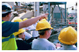
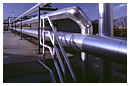
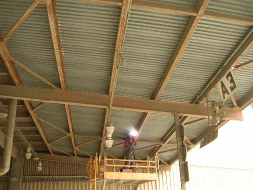
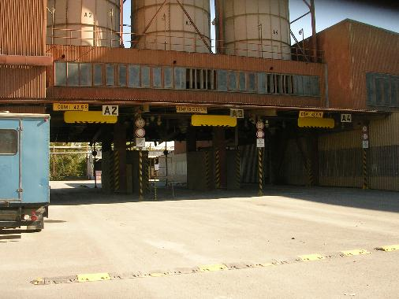
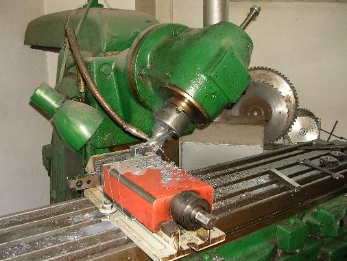
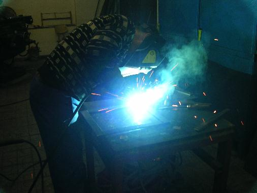
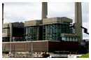
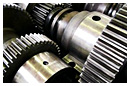
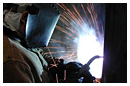
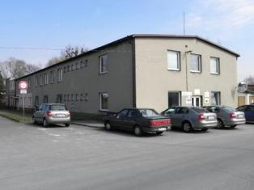
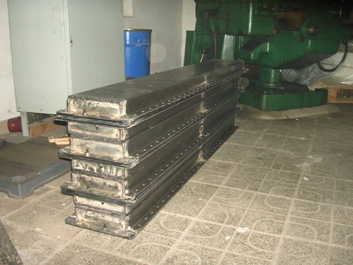
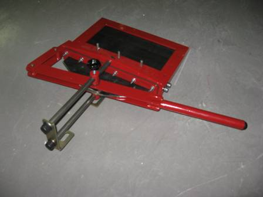
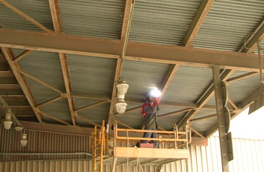
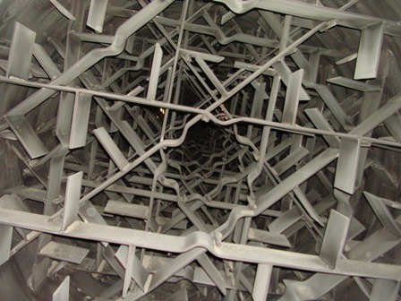
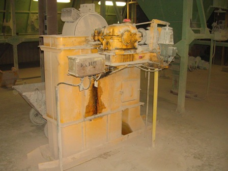
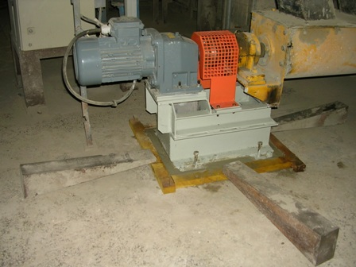
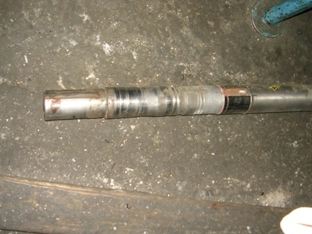
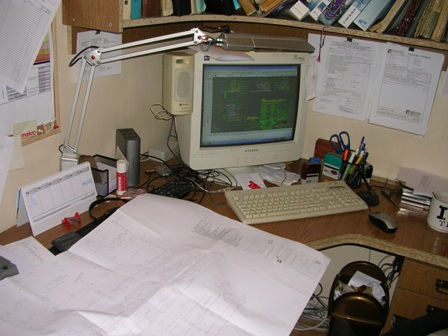
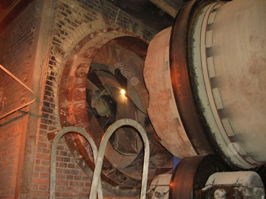
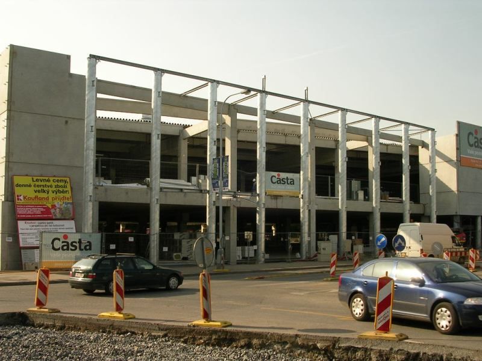
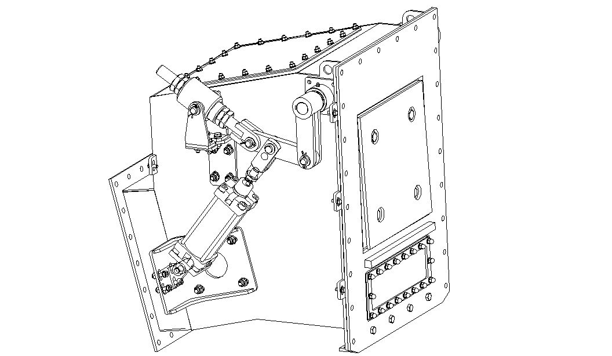
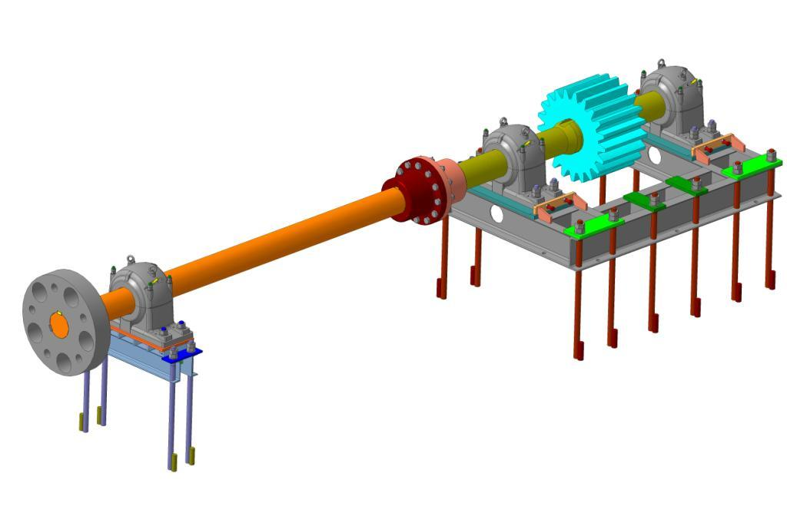
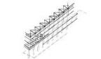
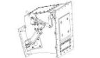
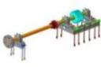
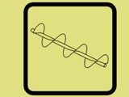
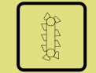
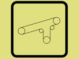
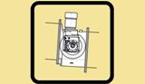
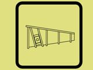
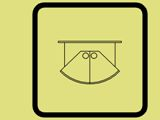
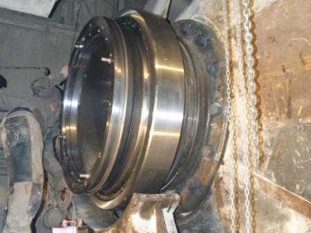
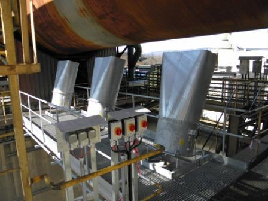
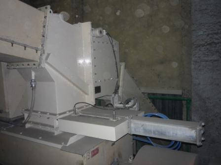
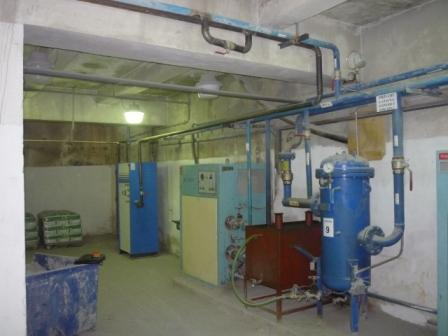
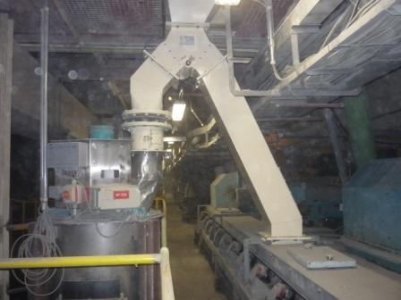
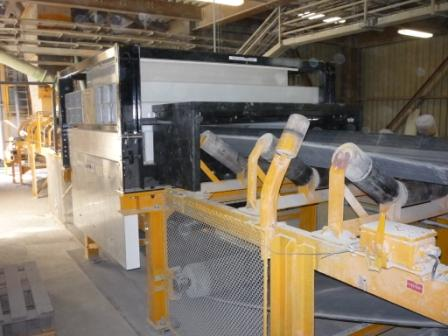
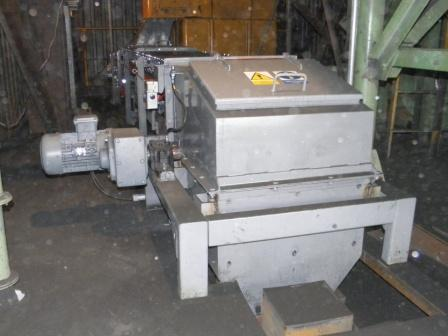
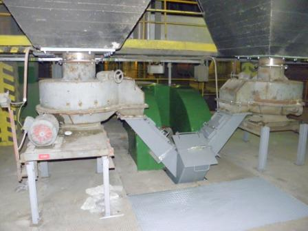
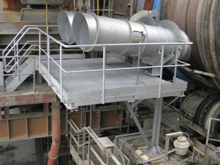
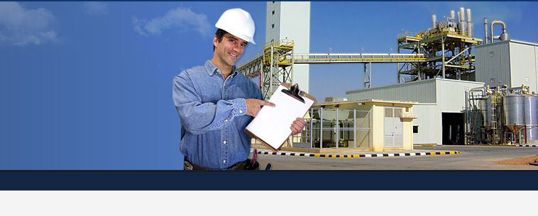
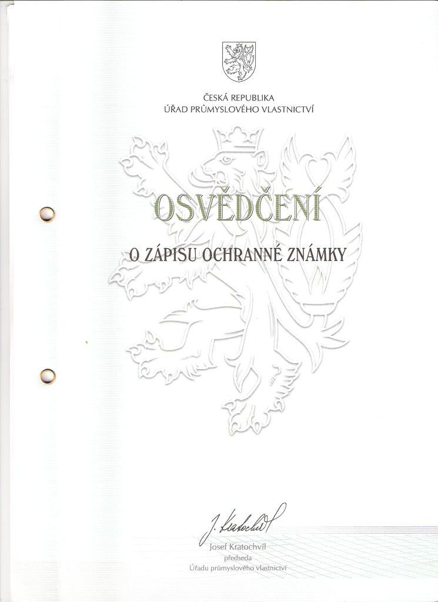
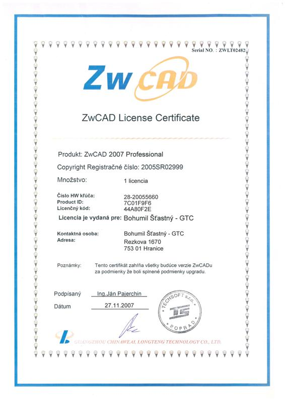
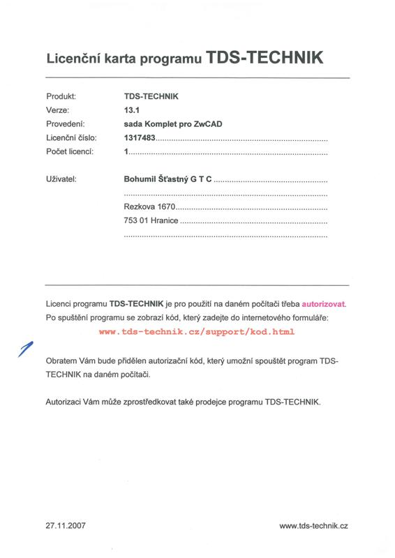
Neváhejte nám zavolat, napsat e-mail nebo nás osobně navštívit na uvedené adrese.
Tovární 605, 753 01 Hranice
Po–Pá: 6:30 – 15:00
IČO: 27812266 | DIČ: CZ27812266 | Doména: gtc-hranice.cz
Vyplňte krátký formulář níže – ozveme se vám zpět v nejbližším možném termínu.